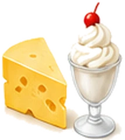
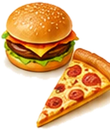
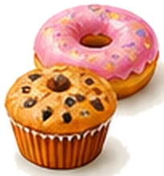
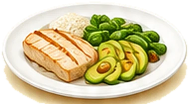

The foods that trigger gallbladder pain, and what to eat instead
Most people with gallstones leave the doctor's with one line of advice: "cut down on fatty food". Then the next attack comes, and they're left wondering whether it was the milk, the cheese or the chips they had last night.
We answer those questions food by food, in plain English, checked against NHS advice. Start with the usual suspects:

Get the free printable Fridge Guide
- Every food sorted into choose, limit and flare-day lists
- A gentle-foods list for bad days
- One page, made to print and stick on your fridge
Foods to avoid with gallstones
These eight are behind most gallbladder attacks. Each one has a simple swap, so you can still enjoy your meals.






Stop guessing at every meal
The free Gallstones Fridge Guide puts every food on one page: what to choose, what to limit and what to eat on a bad day. Print it, stick it on the fridge, and everyone who cooks for you knows what's safe.
- Over 50 everyday foods sorted into green, amber and red
- A gentle-foods list for flare-up days
- Portion tips that make the biggest difference
Is it your gallbladder?
Gallbladder pain usually starts under the ribs on the right or in the middle of the upper tummy, and can spread to the back and right shoulder blade. A typical attack is severe and steady, often comes after a fatty meal or at night, and eases over a few hours.
Our guides explain what an attack feels like, what causes it, and the warning signs that mean you need help straight away.
- Gallbladder pain: where it hurts and when to get help
- Gallbladder symptoms: 10 signs of a problem
- Gallbladder attack: what to do
- Where is gallbladder pain felt?
- Gallbladder pain relief: what helps
- Gallstones treatment: every option explained
- Gallstones symptoms in women
- Inflamed or infected gallbladder

Guides
Gallbladder painWhere it hurts, what triggers it and when to get help. The gallstones dietWhat to eat, what to limit, and a gentle menu for flare-ups.Fried food and gallstonesThe number one trigger, and how to keep the crunch.Milk and gallstonesWhole, skimmed or oat? Every milk compared.Cheese and gallstonesLightest to heaviest, with safe portion sizes.
The gallstones dietWhat to eat, what to limit, and a gentle menu for flare-ups.Fried food and gallstonesThe number one trigger, and how to keep the crunch.Milk and gallstonesWhole, skimmed or oat? Every milk compared.Cheese and gallstonesLightest to heaviest, with safe portion sizes. Eggs and gallstonesWhy the white and the yolk get different verdicts.
Eggs and gallstonesWhy the white and the yolk get different verdicts. Bananas and gallstonesOne of the safest fruits you can eat, even on a bad day.
Bananas and gallstonesOne of the safest fruits you can eat, even on a bad day. Alcohol and gallstonesWhat the research says, drink by drink.
Alcohol and gallstonesWhat the research says, drink by drink.The three rules that matter most
- Keep meals small and regularSkipping meals and fasting make the gallbladder empty less often. Big meals ask it to squeeze hard all at once.
- Watch the fat in each sittingLarge, high-fat meals are the most common trigger. You don't need zero fat, just less at once.
- Fill up on fibreVegetables, fruit, oats, beans and wholegrains are the backbone of a gallbladder-friendly plate.
How we write our guides
Every page checks its advice against NHS guidance and published research, and lists its sources at the bottom. Where the evidence is thin, we say so. We won't tell you a juice, cleanse or single food will dissolve your gallstones, because nothing has been shown to do that. What food can do is make attacks less likely and everyday eating far less stressful.
When to get help straight away
Get urgent advice from your GP or NHS 111 if tummy pain lasts longer than 30 minutes. Call 999 or go to A&E if you have:
- sudden, severe tummy pain
- pain spreading to your back, with vomiting
- a very high temperature, or you feel hot, cold or shivery
- yellow skin or yellowing in the whites of your eyes
Don't drive yourself. No food or drink on this site replaces medical care.